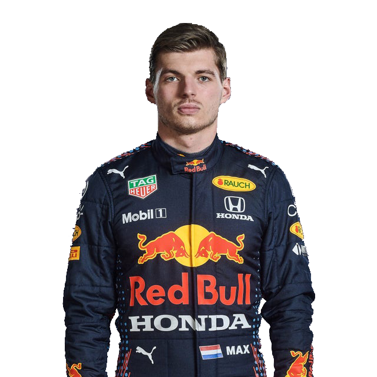
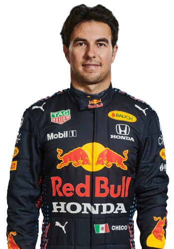
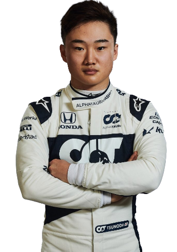

Max Emilian Verstappen (born 30 September 1997) is a Belgian-Dutch racing driver and the 2021 Formula One World Champion. He competes under the Dutch flag in Formula One with Red Bull Racing. He is the son of former Formula One driver Jos Verstappen.
At the 2015 Australian Grand Prix, when he was aged 17 years, 166 days, he became the youngest driver to compete in Formula One. After spending the 2015 season with Scuderia Toro Rosso, he started his 2016 campaign with the Italian team before being promoted to parent team Red Bull Racing after four races as a replacement for Daniil Kvyat. At the age of 18, he won the 2016 Spanish Grand Prix on his debut for Red Bull Racing, becoming the youngest-ever driver and the first Dutch driver to win a Formula One Grand Prix. He finished the 2019 and 2020 championships in third place. After winning the 2021 Abu Dhabi Grand Prix, he became the first Dutch driver to win the Formula One World Championship, and the 34th Formula One World Drivers' Champion. As of the 2021 Abu Dhabi Grand Prix, he has achieved 20 victories and 13 pole positions. At the 2021 Austrian Grand Prix, he scored the first Grand Slam of his career. Verstappen is due to remain at Red Bull until at least the end of the 2023 season after signing a contract extension.
 Sergio Michel Pérez Mendoza (born 26 January 1990), nicknamed "Checo", is a Mexican racing driver who races in Formula One for Red Bull Racing, having previously driven for Sauber, McLaren, Force India, and Racing Point. He won his first Formula One Grand Prix at the 2020 Sakhir Grand Prix, breaking the record for the number of starts before a race win at 190.
Pérez was a member of the Ferrari Driver Academy until 2012. He made his Formula One debut driving for Sauber during the 2011 season. He took his first Formula One podium at the 2012 Malaysian Grand Prix with Sauber. Due to his young age and performance, he was referred to as "The Mexican Wunderkind". Pérez joined McLaren for the 2013 season, but the team did not score a single podium finish. Subsequently, for the 2014 season, the team decided to replace Pérez with Kevin Magnussen.
Force India signed Pérez for the 2014 season with a €15 million contract. He remained with Force India when the team went into administration in 2018 and reformed as the Racing Point team 2019. In 2019, Racing Point signed a three-year extension with Pérez. In September 2020, Racing Point announced that Pérez would be leaving the team at the end of the season as Sebastian Vettel, a four-time F1 world champion, had been signed to replace him. In December, Pérez signed with Red Bull Racing for the 2021 season, following his maiden Formula One win at the 2020 Sakhir Grand Prix; Verstappen’s teammate, Alex Albon, was demoted to test and reserve at Red Bull. Pérez then won the 2021 Azerbaijan Grand Prix with the team and secured the second Formula 1 Grand Prix win of his career.
Pierre Gasly (born 7 February 1996) is a French racing driver, currently competing in Formula One under the French flag, racing for Scuderia AlphaTauri. He is the 2016 GP2 Series champion, and the runner-up in the 2014 Formula Renault 3.5 Series and the 2017 Super Formula Championship. He made his Formula One debut with Toro Rosso at the 2017 Malaysian Grand Prix. He moved to Red Bull Racing in 2019, before moving back after trading with Alexander Albon from Toro Rosso between the Hungarian and Belgian rounds to partner Daniil Kvyat. Gasly took his maiden Formula One victory at the 2020 Italian Grand Prix while driving for AlphaTauri.
At the 2020 Italian Grand Prix, an early pit stop allowed Gasly to pass several drivers - who had to wait for the pitlane to open during a safety car procedure - and go up to a net third place. As race leader Hamilton entered the pits to serve a penalty and second-placed driver Lance Stroll lost places at the restart, Gasly inherited the lead of the race and held off the late-charging Carlos Sainz Jr. to take his first win in Formula One, becoming the 109th different race winner and the first French driver to win a Grand Prix since Olivier Panis' victory at the 1996 Monaco Grand Prix, 24 years prior.
 Yuki Tsunoda (Japanese: 角田 裕毅, Tsunoda Yūki; born 11 May 2000) is a Japanese racing driver who is racing for Scuderia AlphaTauri in Formula One. Supported by Honda since 2016 through the Honda Formula Dream Project, he was the 2018 Japanese F4 champion and in 2019 also received backing from Red Bull. He finished third in the 2020 Formula 2 Championship and made his Formula One debut in 2021 for AlphaTauri, a team owned by Red Bull and using Honda engines.
In the beginning of 2020, Honda announced that Tsunoda will join Carlin to race in the FIA Formula 2 Championship. During the 2020 season he took three wins, four pole positions, seven podiums and finished 3rd in the championship with 200 points.
In August 2020, Scuderia AlphaTauri Honda Formula One team principal Franz Tost announced that Tsunoda would drive for the team in the end-of-season rookie test at Abu Dhabi in December 2020. He had his first drive in a 2018-spec car at the Autodromo Internazionale Enzo e Dino Ferrari in Imola, Italy. He again tested Formula One machinery at Imola in January 2021, but this time, he drove an AlphaTauri-liveried Toro Rosso STR14, Toro Rosso's 2019 car.